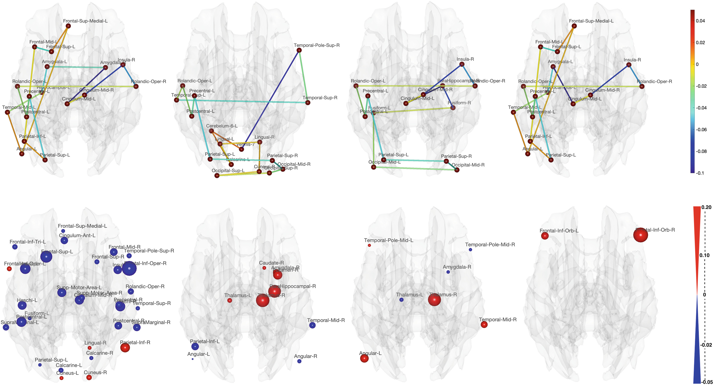
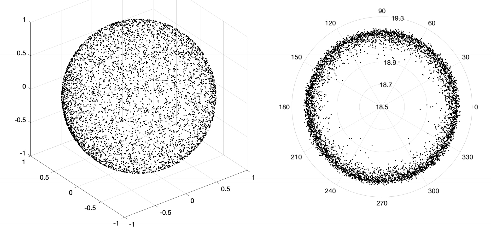
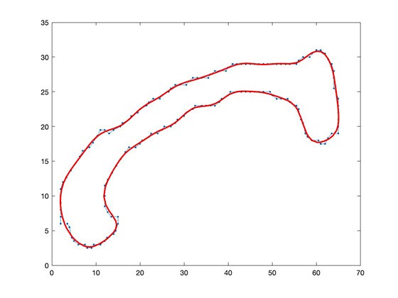

Software
The followings are some of the software of which I am one of the developers.
Brain Networks Analysis
|  | Hodge LapalacianThe code performs the Hodge Laplacian based modeling of cycles and various Hodge Laplacian based computations in brain networks. |
|  | Spherical Multi-dimensional ScalingThe codes performs the spherical- and hyperbolic-MDS of brain networks. |
Computational Neuroimaging/Neuroanatomy
 |
Sulcal pattern modeling and matchingThe code contains: 1) sulcal pattern projection and continuous re-parametrization 2) Pattern matching with the gradient descent solution (Chartrand's method). |
|  | Heat Kernel Smoothing on circular dataThis function provides a smooth estimate of the functional data (corpus callosum boundaries) defined on a circle. This is for matching two circular functional data for cross comparison that reduces spatial variability in statistical analysis. |